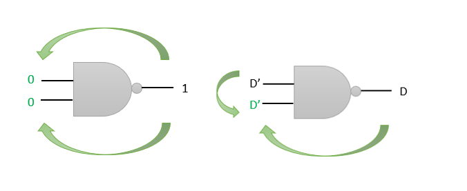

Backtracking
Backtracking is a technique for a sequence of alternatives to achieve a desired solution.
The goal of backtracking is to consider every possible combination to solve an optimization problem.
If a decision causes inconsistency, then we need to backtrack to solve the circuit.
Undo the last decision and select an other possible Way to solve it. Every decision can be made only once in exactly that order.
This means either select another gate from one of the frontiers or decide inputs in another way.
Implications
The implication in the D algorithm is that unknown values in the input lines are determined with a well-known set of values.
Foward Implication
Determination of the output by known inputs values
Backward Implication
Determination of the input by known output value
In the D algorithm, we have two essential components:
Check out this part of a combinational circuit for which ATPG is to be performed.
The blue gates are D-frontier while green gates are J-frontier.
D-frontier:
A set of gates whose output value is currently unknown, but have one or more D (or D’) at their inputs.
J-frontier:
A set of gates whose output value is assigned, but input values have not been decided yet.